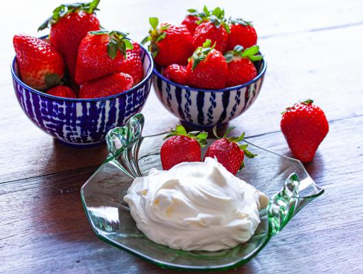
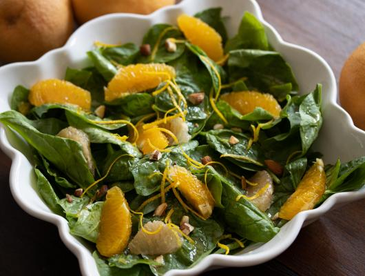

Awesome Recipes
Chantilli Mascarpone

Combined here are my two favorite ingredients, mascarpone, and
chantilly giving us a super easy, 5 minutes only, utterly delicious
Chantilly Mascarpone that you can add any fruit to dessert.
Go to the recipe
Spinach Salad With Citrus

Spinach Salad with Citrus. This salad blends the best of summer
ingredients for a fresh salad and puts to great use grapefruits and
oranges.
Go to the recipe
Zucchini Provolone Pasta

Zucchini Provolone Pasta. Summer bounty is in our fresh vegetables and
fruits which are gracing our grocery stores and fresh farmers’
markets.
Go to the recipe